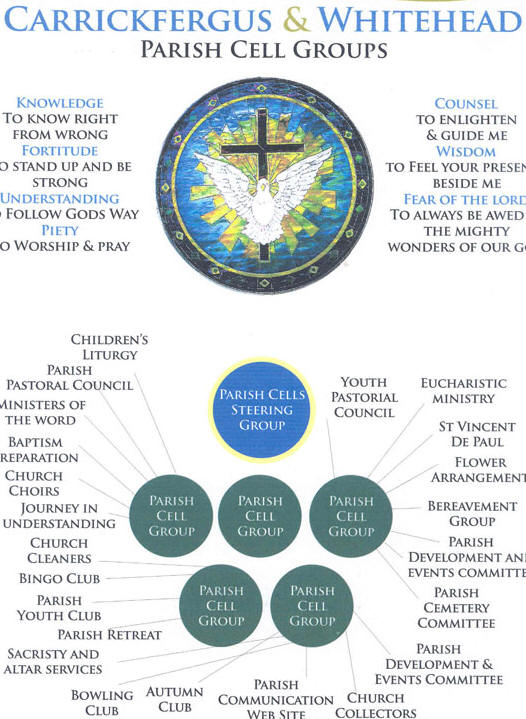
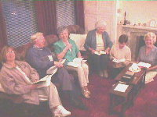
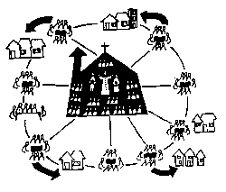

Parish Cell Groups
|

Click here for enlarged image of above |

Illustration by Doug Hewitt |
|
|
Growing together as a Parish Family Understanding the Scriptures and applying them to everyday life Searching for God Click here for BROCHURE AND BOOKING FORM for National Seminar September 2012 held in Carrickfergus Click HERE for photographs for Parish Cells National Seminar October 2011 held in Carrickfergus |
A true community of whatever size, may be described as a group of individuals who have learned how to communicate honestly with each other, whose relationships go deeper than their masks of composure, and who have developed some significant commitment to 'rejoice together, mourn together,' and to 'delight in each other,
making each others' conditions their own.' [M. Scott Peck, The Different Drum, Simon and Schuster, 1988, p. 59.]
WHAT ARE THEY?
The Parish Cells are simply meetings of about four to fourteen people gathering in parishioners homes. The cells get there name from St Paul's analogy of the church as a body made up of many parts. And just as the cells of a body grow and multiply naturally, so too our parish cells aim to grow in number and in
maturity as the Spirit gives us life.
The cells help people in many ways. For example, in a time when society is becoming increasingly individualistic and our homes more and more private places, the cells give people an opportunity to experience Christian community and companionship at a level which is not possible with a visit to church once a week. Also at a time when many are loosing a sense of
purpose and direction in their lives*, the cells give people an opportunity to find meaning and focus in the words of Jesus, who was in himself the Word of God. The cells also help people who are discovering the often neglected spiritual dimension of life and the possibility of a Creator. At this time of personal searching and exploration of all the
possibilities presented by the information age, the cells help people to look in the right direction and to develop spiritually, in a secure and supportive environment.
( *illustrated by the fact that suicide is becoming the biggest killer of young people in Ireland today.)
WHAT HAPPENS AT A CELL MEETING?
The format is simple and informal. After an opening prayer and few hymns one of the Sunday readings is read and discussed by the group. People are encouraged to share on what the passage says to them. There are no right or wrong answers. This is praying, not studying the scriptures. At first it may seem a little difficult to see anything in the passage and confidence to share in the discussion may be low. But in time, as people get accustomed to this way of approaching the Scriptures, they are invariably suprised by what they discover and realise that they too have insights to offer. After this time of discussion, a reflection on audio tape follows. This is usually given by our parish priest Fr Dillon. After a little more discussion of the tape, the needs of those present and of the parish and wider community are remembered in prayer. Then there is time for a cup of tea and a chat.
The cells provide a comfortable and secure environment for people to grow, but in order to avoid becoming too comfortable and too inward looking, those attending are always encourged to share their faith with others, so that they too can 'come and see' for themselves what God can do when they allow space for Him in their lives.
HOW OFTEN DO THE CELLS MEET?
Meetings are held once a fortnight, usually on a Wednesday night (this can vary to suit), from 8pm to 9-30pm.However, the idea is not to join a group but to avail of a meeting, when and if it suits. In this way you are free to decide your own level of commitment without any pressure. Meetings run from September until the end of June. Also, three time a year the cells get together for 'Joint Meetings' in the parish halls.
WHO CAN ATTEND?
The meetings are open to everyone, parishioners and non-parishioners, believers and non-believers. Everyone is most welcome.
WHERE DO THEY MEET?
A number of parishioners have offered their homes as venues, so there is plenty of choice. Go where you feel comfortable.
HOW DO I FIND OUT MORE?
Speak to Fr Dillon or any of the Cell contact persons listed below. Alternatively, you can also e-mail this website. We will answer any queries you may have and help you find a meeting to visit. We look forward to seeing you at one of our cell meetings in the near future.
PARISH CELLS STEERING GROUP:
Margaret Webb (Chair), Desmond Donnelly, Tommy Mone, Linda Mellon, Anne McFerran, Matt Monaghan.
CONTACT:Chairperson Margaret Webb Tel: 07779729505 mags.webb@virgin.net
LINKS TO OTHER PARISHES WITH CELLS:
Leixlip & Confey Parish Cells of Evangelization, Co. KildareParish of St John the Evangelist Ballinteer, Co. Dublin
Parish of Sant Eustorgio, Milan, Italy
Parish of St Edward, Pembroke Pines, Florida, USA
Support Structure
Prayer for Our Cells
Prayer For Parish Cells
Heavenly Father you sent the Holy Spirit into your Church at Pentecost filling the apostles with your power and renewing them in your love. Grant our Cells an outpouring of that same Holy Spirit enabling us:
- to have an even deeper experience of your Presence in our daily lives
- to go out boldly and share this new life with all in our community,
- to dispel all our fears so that in serving you we will invite rich and poor alike to 'come and see' at your banquet,
- to share all we have, joys and sorrows alike thus binding us together like a real community,
- to change so much that others, by our example will want to belong.
We make this prayer through Jesus Christ our Lord. Amen.
On Parish Cells Fr Mike Eivers (Flordia) The Fishermen Story
Parish Cells in Action


 There's room for you !!
There's room for you !!
|  |
OUR PARISH CELLS
A Community of Communities Illustration: |